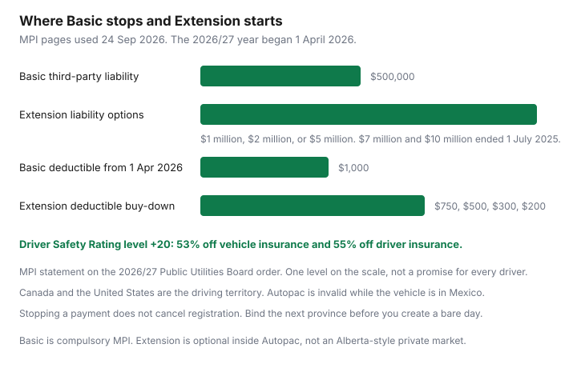

Insurance · Canada
Manitoba Autopac Basics Plus Optional Coverage: Where MPI Ends and Private Choices Begin
New Manitobans sometimes shop Autopac the way they shop a private auto market. Basic is not that market. It is compulsory cover from Manitoba Public Insurance, tied to registration, with injury benefits under the Personal Injury Protection Plan. The decisions that remain are the optional ones: how much liability above $500,000, whether to buy the deductible down, and whether a rental or a long trip needs a product Basic does not include. This page is that split, using MPI’s own pages and the 2026/27 Public Utilities Board year. ICBC and SAAQ shopping stay on their Transportation guides. Saskatchewan’s plate is the next Prairie page, not a copy of this one.
Disclosure: An Autopac agent is where Extension is selected. Broker quote portals are an offer type only for a risk MPI does not write the way you use the vehicle. Saving Optimizer may earn a commission if those links are added later. We do not claim a partnership with MPI or any brokerage. Figures are from MPI and the Public Utilities Board record, used 24 Sep 2026. Education only.
Key takeaways
- Basic third-party liability is $500,000. Extension, from 1 July 2025, is $1 million, $2 million, or $5 million. The $7 million and $10 million options ended.
- From 1 April 2026 the Basic deductible is $1,000. Extension can buy it down, including a $750 option plus $500, $300, and $200.
- Driver Safety Rating level +20, in the 2026/27 order, is a 53 percent discount on vehicle insurance and 55 percent on driver insurance. It is one step on a scale, not a coupon.
- You cannot move Basic to a private insurer. The private decisions are Extension limits, rental-vehicle insurance, and travel medical for illness abroad.
- Autopac covers driving in Canada and the United States. It is invalid in Mexico.
- A move ends Basic when the new place requires registration, when you register there, or when you let coverage lapse. Stopping a payment is not a cancellation.
Compulsory Autopac vs Extension / optional products in plain language
MPI splits the automobile product in two. Basic is the compulsory line. The Public Utilities Board sets Basic rates for the insurance year that begins on 1 April. Extension is optional automobile insurance MPI sells for a lower deductible, higher third-party liability, and products such as rental-vehicle insurance. The Board has said it does not set Extension rates. You still buy Extension inside the Autopac system, usually at the same agent visit. That is not Alberta’s private market, where the whole policy can move to another company.
| Piece | Basic | Extension, if you buy it |
|---|---|---|
| Third-party liability | $500,000 | $1 million, $2 million, or $5 million. Customers renewing from $7 million or $10 million move to $5 million, with a chance to change at the agent. Special Risk Extension cannot push an eligible vehicle past $5 million. |
| Damage to your vehicle | All perils, deductible $1,000 for policies effective 1 April 2026 or later. The previous Basic deductible was $750. | Buy-down to $750, $500, $300, or $200. MPI said customers sitting at $750 would be assigned a $750 Extension deductible at renewal and could change it free of charge before the renewal payment due date. |
| Injuries | Personal Injury Protection Plan for Manitoba residents, including on a trip in Canada or the United States in the way MPI describes PIPP. | Not a substitute for PIPP. Some vehicles, including many off-road vehicles, have thinner injury cover and are a separate MPI page. |
| Who regulates the price | Public Utilities Board, each insurance year. | MPI’s Extension line. The Board’s 2025 order noted that a large majority of eligible customers buy at least one Extension product. Choice still means reading the limit. |

Driver Safety Rating effects on premium trajectory
The Driver Safety Rating moves with your record. One clean year can step you up. An at-fault claim can step you down. MPI does not publish a single percentage that applies to every step. The number that is specific, in MPI’s statement on the 2026/27 Public Utilities Board order, is the new top of the scale: customers who move to level +20 receive 53 percent off the cost of their vehicle insurance and 55 percent off their driver insurance. MPI’s earlier application had described 53 percent on automobile and driver insurance together. Use the post-order statement, and read your renewal. Level +20 is not the discount at level +5.
The practical moves are ordinary. Know your current level before you shop a story you heard from another province. Ask the agent what an at-fault claim would do to the level, in dollars on this vehicle, before you open a small claim you could pay. The claim-impact guide is the private-market version of that question. On Autopac the scale has a name. The habit is the same: injury gets reported; a parking-lot scrape you can pay is a budget choice you make with the deductible in view.
A household with two vehicles does not inherit an Ontario multi-car percentage. The multi-car guide already separates private filings from MPI, ICBC, and SGI. Ask MPI how each vehicle and each driver is rated. Write the answer on the renewal.
What you can still shop: higher liability, rental, and specialty add-ons
Basic is not shopped to Intact or to a direct writer. These are the choices that are actually open.
- Liability above $500,000. MPI’s own out-of-province page says claims outside Manitoba, especially in the United States, can reach into the millions, and that additional third-party liability up to $5 million is available. A weekend in North Dakota is enough reason to price $2 million before you leave. The premium difference is what the agent prints, not a national table.
- Deductible. $1,000 is the Basic floor from 1 April 2026. Buy it down only if $1,000 would wreck the month and the Extension price is a number you prefer to keep. The deductible test on a house is the same cash question: can the emergency fund pay the amount on the page.
- Rental vehicle insurance. This is a separate policy, not the deductible on your own car. MPI’s rental page, used 24 Sep 2026, covers rented or borrowed private passenger vehicles, light trucks, motorcycles, and mopeds in Canada or the United States, for 3 to 90 days, with up to $5 million for claims others make, up to $100,000 for damage to a vehicle rented outside Manitoba, and a $200 deductible. If you rent a vehicle that is already registered and insured in Manitoba, that vehicle’s Basic covers a licensed driver with permission, and from 1 April 2026 you are responsible for the $1,000 Basic deductible unless rental-vehicle insurance lowers it to $200. A higher third-party limit you bought can transfer to a rented or borrowed vehicle for 30 days. MPI says that transfer does not pay the rental company’s damage or downtime, and it may not be enough against other motorists in the United States.
- Travel medical. MPI tells drivers to check Manitoba Health for care outside the province and to buy travel medical if they need more. PIPP is injury from an automobile crash. It is not a stomach illness in Minneapolis. The travel-medical guide is that purchase.
Claims touchpoints and how optional cover interacts with Basic
After a crash, Basic is still the policy that responds to injury under PIPP and to vehicle damage, subject to the deductible. Extension changes the size of the cheque. It does not replace the claim report.
- Report the collision to MPI. The collision checklist is the scene, the other driver, and photos. Name where you were. A loss outside Manitoba still goes to MPI if Autopac was in force, and the other jurisdiction’s rules about lawsuits can apply. MPI’s leaving-Manitoba page says other places may allow a lawsuit for injuries or property damage, which is why the liability limit matters before you go.
- The deductible you pay is the one in force that day. If you accepted the automatic $750 Extension assignment, that is the number. If you moved to $1,000 to lower the premium, that is the number. Extension does not erase a Basic claim from the Driver Safety Rating.
- A rental after your own vehicle is in the shop is a loss-of-use question on your policy, which is different from the rental-vehicle policy you buy before you borrow someone else’s car. Ask which product you actually hold. The names are easy to swap.
- Impaired driving can void third-party liability. MPI says so on the liability page. Optional limits do not insure that fact away.
Moving to/from Manitoba: plate and continuous-insurance traps
The trap is a gap, or a policy you think you cancelled because the bank stopped paying.
- Leaving. MPI’s leaving page says to check registration and licensing rules in the new place even if the vehicle stays behind. Autopac all-perils and third-party liability end when that place requires you to register, when you register there, or when coverage expires or you are suspended for non-payment. If you are on instalments, you must keep paying until you cancel. Stopping the pre-authorized debit does not cancel registration, and it can suspend your Manitoba driving privileges and follow you. Once you have the new licence and registration, send copies and a signed cancellation. MPI’s driver-history letter for another insurer lists at-fault claims in the last 10 years and costs $15. Order it while you still can.
- Arriving. Register and insure with MPI when Manitoba’s rules say a new resident must. Bring the out-of-province record. Do not let the old policy lapse on the drive across the border and assume Basic started when you crossed the city limit. Overlap is the same rule as every other guide on this site: no bare day.
- A long trip that is not a move. If you will be outside Manitoba when Autopac renews, talk to the agent before you leave. MPI says special arrangements can keep coverage in force. Mexico is not a long trip Autopac covers. Coverage is invalid while the vehicle is there. If the vehicle stays in Mexico longer than 14 days, MPI will refund premium for the days beyond 14 if you can prove entry and exit with the importation card, a foreign insurance certificate, and an exit visa or a stamped passport.
Another province’s insurer may ask for continuous insurance. A Manitoba lapse you caused by stopping payments is a fact on that application. Bind the new policy first if the dates allow, then cancel.
Annual PUB rate context—re-verify figures at draft
Basic rates are not a loyalty discount you negotiate. The Public Utilities Board hears a general rate application and issues an order for the insurance year that starts on 1 April. For 2026/27, MPI’s application asked for a 2.07 percent overall increase on Basic, described as about $21 a year on the average private passenger policy, about $1.75 a month. MPI’s statement on the Board’s order says it will implement that order beginning 1 April 2026. The deductible change to $1,000 and Driver Safety Rating level +20 are part of what MPI said the order approved.
Re-read the order, not this paragraph, before you treat 2.07 percent as the change on your vehicle. Your renewal is vehicle, territory, and driving record. Extension prices are outside the Board’s rate order. The documents to open each spring are the Annual Statement of Account, the renewal notice, and mpi.mb.ca. If those three disagree with a summary you saved, the renewal notice wins.
Put the 1 April renewal on the annual review even if the rest of the household renews in another month. The question for that sitting is simple: is liability still $500,000 on a vehicle that leaves the province, and is the deductible the one you can pay.
Sources & date stamps
- MPI, Basic third-party liability and increasing third-party liability — $500,000 Basic; Extension $1 million, $2 million, or $5 million from 1 July 2025; $7 million and $10 million no longer offered. Used 24 Sep 2026.
- MPI, statement on the 2026/27 Public Utilities Board order, and the 2026/27 general rate application — deductible from $750 to $1,000 beginning April 2026; Extension buy-down including $750 plus $200, $300, and $500; Driver Safety Rating +20 at 53 percent vehicle and 55 percent driver; application requested 2.07 percent overall on Basic. Used 24 Sep 2026.
- MPI, using your vehicle outside Manitoba — Canada and the United States; Mexico invalid; refund after 14 days with listed documents. Used 24 Sep 2026.
- MPI, leaving Manitoba and rental vehicle insurance — when cover ends; $15 claims-history letter; rental limits and the $200 deductible. Used 24 Sep 2026.
- Public Utilities Board Order 156/25 is the decision to re-read for the approved Basic change. This page does not reprint the order.
Frequently asked questions
Can I shop Autopac Basic to a private insurer?
No. Basic Autopac is compulsory Manitoba Public Insurance, bought with registration. Extension products, including higher liability and a lower deductible, are also selected in the Autopac system. Private insurance does not replace Basic the way an Alberta policy can.
What liability and deductible does Basic include?
MPI’s pages, used 24 Sep 2026, put Basic third-party liability at $500,000. From 1 April 2026 the Basic physical-damage deductible is $1,000. Extension can raise liability to $1 million, $2 million, or $5 million, and can buy the deductible down to $750, $500, $300, or $200.
Does Autopac cover a drive in the United States or Mexico?
MPI says Autopac protects you in Canada and the United States, and that liability limits should be as high as you can reasonably buy before a U.S. trip. While the vehicle is in Mexico, Autopac is invalid. A stay longer than 14 days can qualify for a premium refund for the days beyond 14, with the documents MPI lists.
What happens to my policy if I move?
MPI says Autopac all-perils and third-party liability end when the new place requires you to register, when you register there, or when coverage expires or is suspended for non-payment. Stopping a bank payment does not cancel the policy. Bind the next province’s insurance so there is no bare day, then cancel Manitoba in writing.
Is this brokerage advice?
No. Education only. An Autopac agent is where Extension is chosen. We do not claim a partnership with MPI or any brokerage.